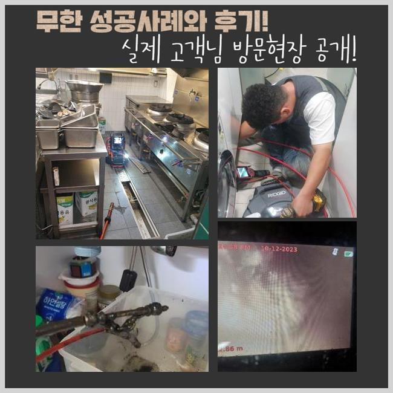
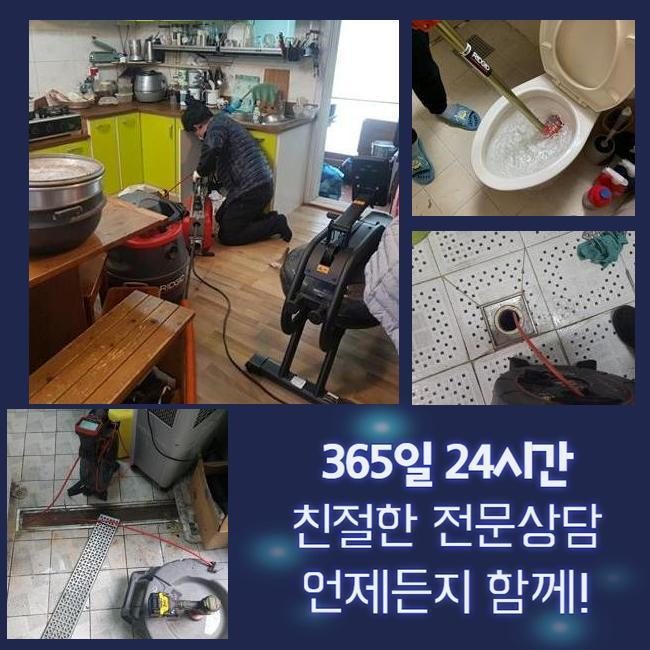
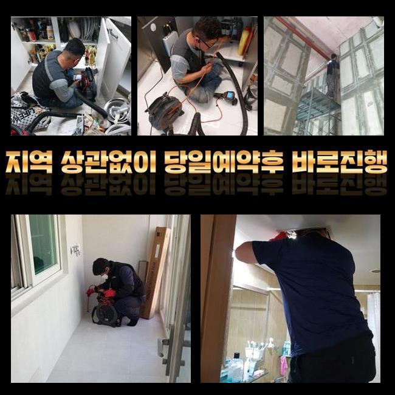
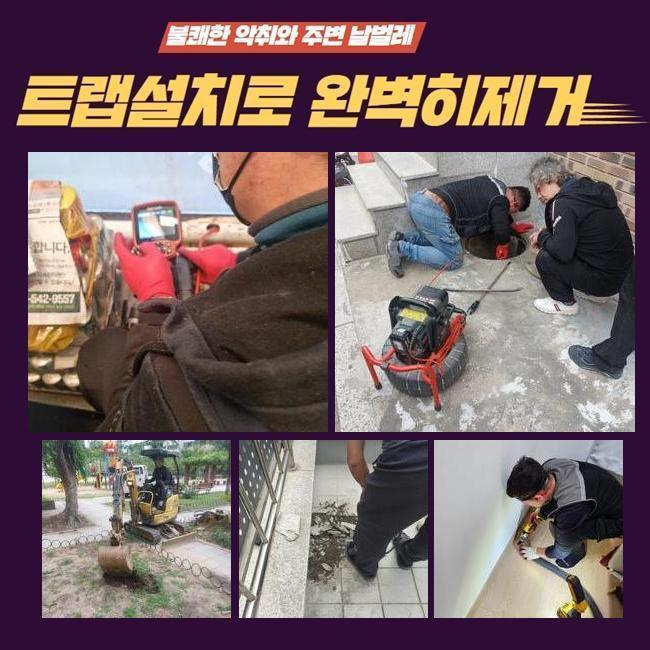
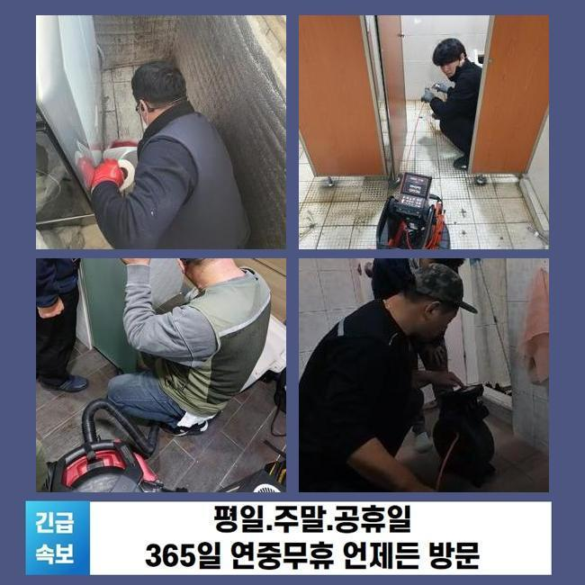

🏠 금이동세탁실역류 정왕3동 하수구뚫어주는곳 부속수리
용인 금이동 하수구막힘 전문 시공 후기

📋 작업 개요
- 위치: 용인 금이동, 금이동, 용인
- 서비스 유형: 하수구막힘, 배관막힘, 역류해결, 뚫는업체, 배관청소
- 작업 일시: 2025. 4. 4. 8:54
- 업체명: 하수구수사대 (010-5615-2118)
🔍 문제 상황
금이동세탁실역류 정왕3동 하수구뚫어주는곳 부속수리
화장실들을 이용하시는 때에 수만가지 연유들로 배수관이 제 기능을 못하는 경우들이 비일비재해요
같은 맥락으로 화장실공간은 생활부분에서 반드시 이용되고 있는 장소이기에 평소에 관심을 쏟는것이 좋겠죠
여러개의 요소들로 인해 정체의 연유가 되기에 이러한 내용의 이해들이 중요하게 작용하죠
일단 정체의 이유중에서 흔히 보이는건 석회잔해가 하수관에 누적되는것인데요
이물이 증가하는 까닭으론 우선은 샤워용품들과 관련되있고 수도의 잔여물질과 엉키면서 석회잔해가 만들어지는 결함이 발생되는데요
마찬가지로 머리카락들이 하수관에 축적되면 증세들은 날로 늘어날거에요
더 나아가 관리해주는것에 신경쓰시지 않는다면 이러한 석회이물이 많이 생겨날거에요
심지어는 보건과 연관된 사안들에도 의외로 불편들을 끼치는 까닭에 간단하게 판단해서는 안되는데요
석회의 잔해는 각 관로에서 고착되며 배수가 안되는 사태를 유발합니다

🔎 원인 분석
💡 전문가 진단: 정밀 진단 장비를 사용하여 슬러지의 고착 여부를 판명하고 타격/세척 작업을 실시했습니다.
단단히 굳게되면 구비되어있는 크리너로 없애는게 어려워요
같은 맥락으로, 머리카락들과 유분성분의 잔여물질들이 하수관으로 흐르게되면서 누적되는 경우들도 흔하게 나타나요
더군다나 제모 등을 하실 때 쌓이는 잔해와 락스처럼 수만가지 유기물질들도 정체의 이유들로 작용하겠습니다
위와같은 증상이 발생되면 증상의 경중으로 인해 역류되며 하수들이 위로 솟구치는 현상들이 발생할지 모릅니다
2차적인 피해들은 단순한 스트레스를 넘어 위생과 관련된 증상을 생겨나게 하므로 관리에 힘쓰는 것이 필요해요
최초 목격 과정에서 간단한 문제라고 여기고 자가적인 방법들만 고집하시면 예상못한 국면을 맞이할 수 있으니 이상징후가 발생된다면 신속히 전문가들의 대응을 기대해보는게 좋겠습니다
그럼 통수정체들이 발발한 시점에 어떠한 과정들로 증상들을 복구하는지 자세하게 설명드릴게요
찾아뵈었던 현장의 결함은 화장실 바닥쪽이 막히게되어 의뢰인분은 많은 곤란함을 겪었어요
우선 파악한건 샤워호스 쪽과 세면대쪽이 같이 막히는 바람에 있었기 때문에, 이용과정에서 난감한 상태들에 놓이게되었는데요
이같은 상황은 생활측면에도 큰 고충을 발현케 하며 빠른 조치가 필요해요
증상을 해결하고자 1순위로 석션장비를 써서 하수관에 부유하는 오수들을 없애주었는데요

🔧 작업 과정
석션은 흡입능력을 자랑하고 고인 물을 조속히 제거해주는데에 효과를 보여요
그러고나서 내시경장치로 배수관의 상황들을 체크해보니 혹시라도 부유물들이 많으면 내시경도구로 체크하는게 어려워서 잔해들을 제거시키는 과정들이 필요하겠습니다
석션기기로 청소들을 해주었지만 이전과 같이 통로가 부족한걸 파악했는데요
이런 결함은 이곳저곳 누적된 석회들을 떨어뜨려야 깊은 배관 모습을 파악하는게 가능합니다
석회들은 굳게될 시 하수구를 막아버리므로 막히는 증세의 이유중에서 하나로 꼽혀요
이 증상들을 없앨 목적으로 샤프트기기와 흡착물 유화제들을 써서 수월하게 제거시키고자 했죠
유화제를 부어주었더니 거품까지 발생되며 석회잔해가 유화되었고 샤프트장비를 가용하여 붙어있는 석회들을 타격해서 사라지게끔 했어요
샤프트기기는 헤드쪽에 노커체인이 장착되어 있기에 벽쪽에 흡착되어버린 석회들을 타격해 제거해요
흡착물에서 조각으로 나뉘어진 석회이물들의들은 석션장치를 통해 어렵지않게 청소해보려고 했습니다
제거수순이 일단락되고 다시금 내시경으로 검사해보았어요
잔해들이 사라진 걸 인지했지만 단순하게 잔해가 안보인다고 안심해선 안되죠
물들이 원활하게 배출되는지 테스트하는 절차가 실시되어야했죠
수돗물을 일시에 흘려보내 하수관의 배수시험을 이행했고 처음과 다르게 수월하게 배출되는걸 알 수 있었어요
마무리 과정에서 고객이 사용하실때 조심해야하는 점까지 안내드렸습니다
선제적으로 여과부품등을 놓아주시고 정기적으로 관리해주는게 문제들이 생겨나지않게하는 방식인것을 안내했답니다
쉬운 관리책들이 배수관 문제들을 막는데에 효율적인 도우미가 되는것을 다시 한번 설명했죠


✅ 작업 완료
이렇듯 욕실 배수불량을 복구하는 절차를 꼼꼼하게 설명드렸습니다
앞서서 관심들을 기울이면 이러한 불편들을 최소화할 수 있단걸 기억하시기바라요
미리미리 준비하시는게 가장 좋고 주기적인 관리들은 이러한 증상들을 초기에 방지하게 될 수 있어요
보건적인 측면과 위생적인 점을 생각해서 하수시스템이 자리한 곳이라면 설명드린 내용들을 참고하시어 유용하게 사용하시길 바랍니다
화장실공간은 생활부분에서 반드시 있어야 할 공간이므로 관리하는것에 등한시 하지 않는게 좋겠습니다


⚠️ 하수구 배관 막힘 예방 및 관리 가이드
- ✅ 머리카락, 비닐, 물티슈 등 물에 분해되지 않는 이물질은 하수구 유입을 절대 금지해 주세요.
- ✅ 하수구 거름망을 씌우고 모여진 이물질은 주기적으로 쓰레기통에 바로 비워주셔야 합니다.
- ✅ 배관 노후가 심할 경우 이물질이 더 쉽게 걸리므로 주기적인 배관 세척(고압세척 등)을 권장합니다.
- ✅ 작업 후 1년 이내 재발 시 하수구수사대에서 무상 A/S 보증 서비스를 제공합니다.
💡 핵심 정리
- 확실한 장비 작업(내시경 점검 및 샤프트 스케일링)으로 원인을 뿌리 뽑습니다.
- 작업 후 1년 이내에 동일한 부위 재발 시 100% 무상 A/S 서비스를 보장합니다.
- 서울 · 경기 · 인천 전 지역에 24시간 언제든 긴급 출동할 수 있도록 항시 대기 중입니다.
❓ 자주 묻는 질문 (FAQ)
🚨 용인 금이동 하수구막힘 문제로 고민이신가요?
정확한 원인 진단과 확실한 시공으로 재발 없는 해결을 약속드립니다.
24시간 긴급 출동 | 서울 · 경기 · 인천 전지역 | 1년 내 재발 시 무상 A/S